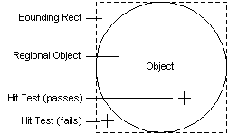

To locate an object's children or to determine an object's size, clients can hit test points on the screen. Two methods are available:
To identify whether a point is within an object, within its child, or neither, clients call the IAccessible::accHitTest method of the parent object, passing the screen coordinates of the point to be hit tested. The following list describes some typical scenarios:
To get the screen location of an object or one of the object's children, clients call IAccessible::accLocation. This method returns the coordinates of the specified object's bounding rectangle. If the object is not shaped like a rectangle, the method returns the coordinates of the smallest rectangle that encompasses the entire object.
The following illustration shows the relationship between a non-rectangular object's region and its bounding rectangle.

[!Note]
IAccessible::accHitTest is more precise than IAccessible::accLocation because it enables clients to determine the location of objects on a pixel-by-pixel basis rather than with bounding rectangles. This precision is useful, for example, when an application is gathering information by tracking the location of the mouse pointer.
Â
Â
Â